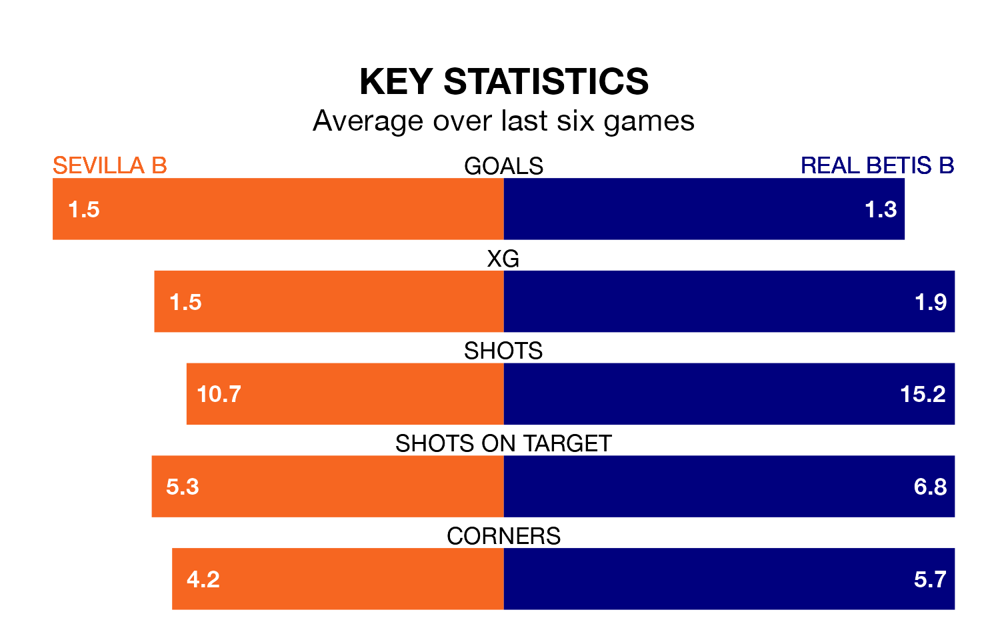

Sunday's early match between Sevilla B and Real Betis B promises to be one for the neutrals, as two of Segunda División RFEF Group 4's most free-scoring sides go head-to-head.
Ahead of the game, Sevilla B and Betis B sit top and third in the goal-scoring charts, with 39 and 28 goals respectively.
Sevilla B are top of the table after 21 games, of which they have won 13 and drawn five, earning 44 points.
Betis B are five places behind the hosts in sixth, with eight wins and nine draws putting them on 33 points.
In the last 10 years, Sevilla B and Betis B have played each other on 11 occasions. Sevilla B won four of them, Betis B three, and they drew four times.
On average, Sevilla B scored 0.6 goals and Betis B 0.7 in those matches.
Their last meeting was on October 1, when they played out a 1-1 draw.
Sevilla B are in reasonable form in Segunda División RFEF Group 4, with three wins and three draws from their last six games.
And also with three wins and three draws over that period, the away side's form is identical – they have both taken 12 points from 18.
Sevilla B's last match was on February 4, a 3-1 win against La Unión Atlético.
Betis B beat CD San Roque de Lepe 1-0 last time out, also on February 4.
Updated: 10:01 (UTC), 06/02/24